30+ Vintage Christmas Cookie Recipes
📌 Save to Pinterest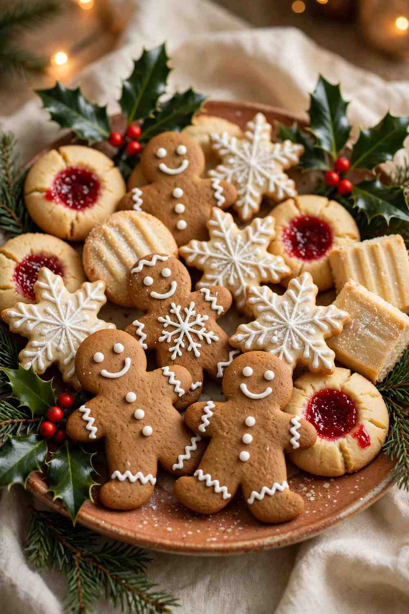
Some cookies taste like Christmas because they taste like childhood: the sugar cookies rolled out on a floured counter, the icebox logs sliced straight from the fridge, the spice bars glazed while still warm. This roundup gathers thirty vintage Christmas cookie recipes — old-fashioned favorites from grandma's kitchen, from sour cream sugar cookies and pecan sandies to lebkuchen bars, springerle and jam-filled rugelach. Bake a batch ahead, fill a tin or two, and the cookie table takes care of itself.
How to bake vintage Christmas cookies
Start with the doughs that need chilling — icebox logs, pinwheels, cutouts and springerle — and make them the day before so the flavors deepen and the shapes hold. Roll cutouts on a lightly floured surface and keep the dough cold between batches. For drop cookies and bars, a hot oven and a watchful eye matter more than anything: vintage recipes bake fast, so pull them when the edges are set and the centers still look soft. And if you are filling tins for gifts, pack crisp cookies apart from soft ones so nobody goes stale.
Good to know: Everything is written in American English, and measurements use US customary units — cups, tablespoons, and Fahrenheit — for cooks in the United States. Always follow safe food-handling guidance, and check labels for allergens when cooking for others.
Food safety: the eggs in these cookies are baked through — bake until set and golden. For egg dishes, the USDA safe temperature is 160°F (71°C)..
Sugar cookies, shortbread & pinwheels
The cookies that started it all — soft sugar cookies, slice-and-bake logs, buttery shortbread and pinwheels with a swirl of date filling.
1. Old-Fashioned Sour Cream Sugar Cookies
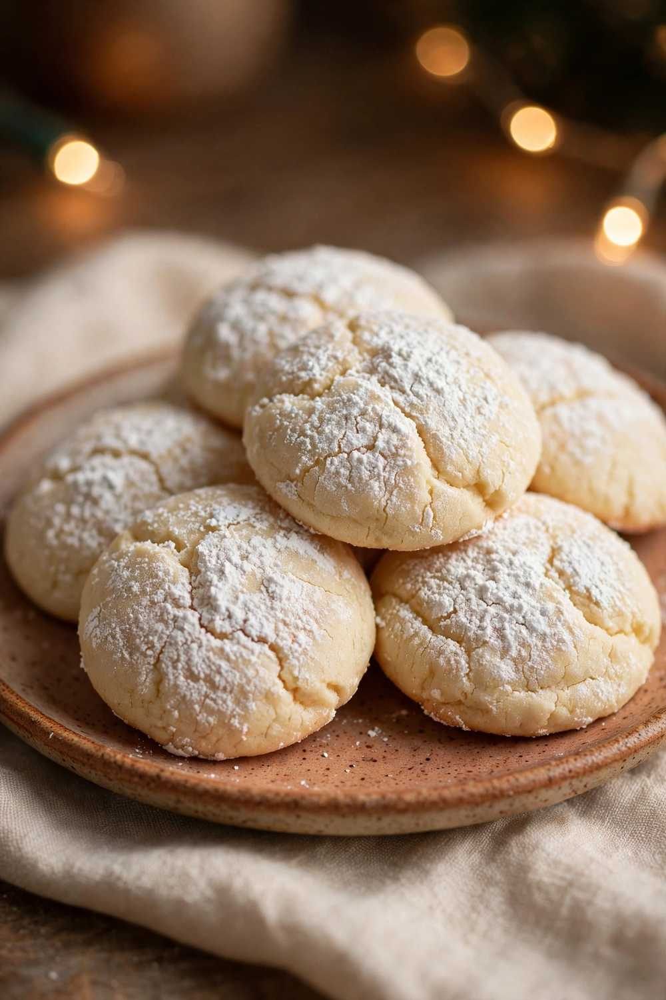
Soft, tender sugar cookies made with sour cream.
Ingredients
- 1 cup butter
- 1 1/2 cups sugar
- 2 eggs
- 1 cup sour cream
- 1 tsp vanilla
- 4 cups flour
- 1 tsp baking soda
- 1/2 tsp salt
Directions
- Cream butter and sugar, then beat in eggs, sour cream and vanilla.
- Stir in flour, baking soda and salt.
- Chill 1 hour, roll out and cut shapes.
- Bake at 350°F for 10 minutes.
2. Grandma's Icebox Cookies

Slice-and-bake cookies, straight from the fridge.
Ingredients
- 1 cup butter
- 1 cup sugar
- 1 cup brown sugar
- 2 eggs
- 1 tsp vanilla
- 3 1/2 cups flour
- 1 tsp baking soda
- 1 cup chopped pecans
Directions
- Cream butter and sugars, beat in eggs and vanilla.
- Stir in flour, baking soda and pecans.
- Shape into logs, wrap and chill overnight.
- Slice thin and bake at 350°F for 10 minutes.
3. Pecan Sandies
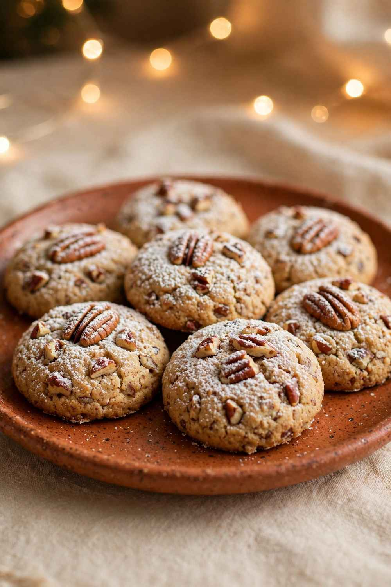
Buttery, sandy shortbread that melts away.
Ingredients
- 1 cup butter
- 1/2 cup powdered sugar
- 2 cups flour
- 1 cup finely chopped pecans
- 1 tsp vanilla
- 1/4 tsp salt
Directions
- Cream butter and powdered sugar.
- Stir in flour, pecans, vanilla and salt.
- Shape into small rounds and bake at 325°F for 18 minutes.
- Roll in powdered sugar while warm.
4. Date Pinwheel Cookies

Swirls of sweet date filling in a buttery cookie.
Ingredients
- 2 cups chopped dates
- 1/2 cup sugar
- 1 cup water
- 1 cup butter
- 1 cup brown sugar
- 1 egg
- 3 cups flour
- 1 tsp baking soda
Directions
- Simmer dates, sugar and water until thick; cool.
- Cream butter and brown sugar; beat in egg and flour mixture.
- Roll dough into a rectangle, spread with date filling and roll up.
- Chill, slice and bake at 350°F for 12 minutes.
5. Hermit Cookies
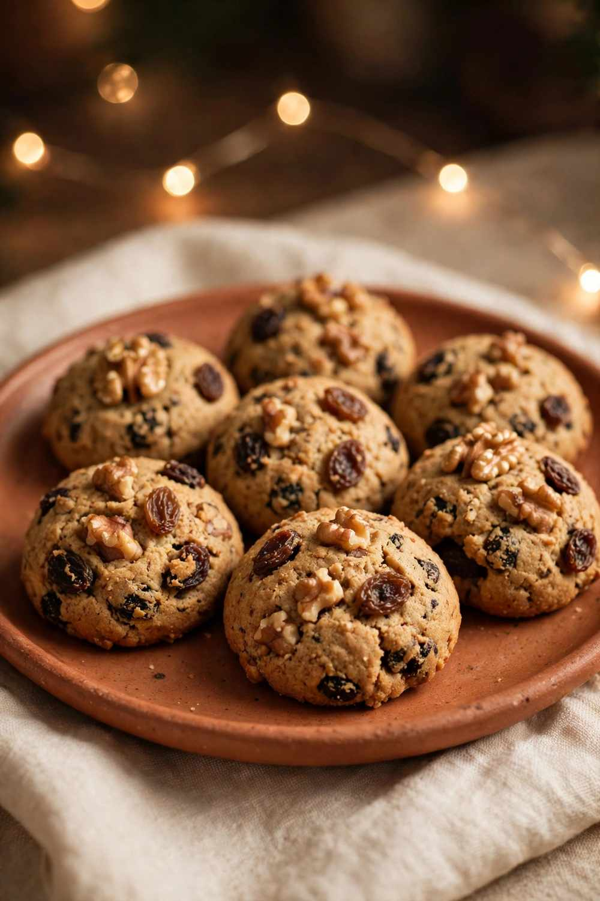
Spiced, chewy cookies packed with raisins and walnuts.
Ingredients
- 1/2 cup butter
- 1 cup brown sugar
- 1 egg
- 1/4 cup molasses
- 2 cups flour
- 1 tsp cinnamon
- 1/2 tsp nutmeg
- 1/2 tsp baking soda
- 1 cup raisins
- 1/2 cup chopped walnuts
Directions
- Cream butter and brown sugar; beat in egg and molasses.
- Stir in flour, spices, baking soda, raisins and walnuts.
- Drop by spoonfuls and bake at 350°F for 12 minutes.
6. Brown Sugar Shortbread Fingers
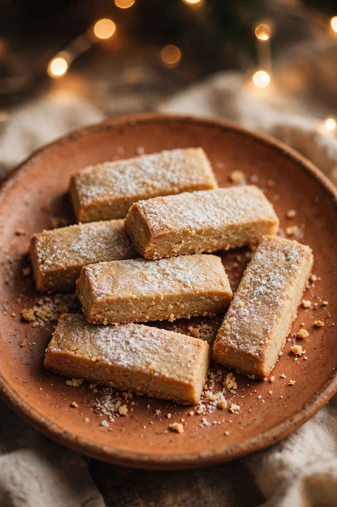
Crisp, buttery shortbread with a light caramel note.
Ingredients
- 1 cup butter
- 1/2 cup brown sugar
- 2 cups flour
- 1/4 tsp salt
- 1 tsp vanilla
Directions
- Cream butter and brown sugar with vanilla.
- Stir in flour and salt until a soft dough forms.
- Press into a pan and score into fingers.
- Bake at 325°F for 25 minutes; cut while warm.
Spiced, citrus & jam-filled cookies
Warm spice, bright citrus and sweet jam — lebkuchen bars, lemon meltaways, apricot kolaches and snappy gingersnaps.
7. Lebkuchen Bars

Soft German spice bars with a sweet glaze.
Ingredients
- 2 cups flour
- 1/2 cup honey
- 1/2 cup brown sugar
- 1 egg
- 1 tsp cinnamon
- 1/2 tsp cloves
- 1/2 tsp nutmeg
- 1 tsp baking soda
- 1 cup powdered sugar
- 2 tbsp milk
Directions
- Warm honey and brown sugar; cool slightly.
- Stir in egg, flour, spices and baking soda.
- Spread in a pan and bake at 350°F for 20 minutes.
- Glaze with powdered sugar and milk.
8. Almond Crescents

Delicate crescent cookies rolled in powdered sugar.
Ingredients
- 1 cup butter
- 1/2 cup powdered sugar
- 2 cups flour
- 1 cup ground almonds
- 1 tsp almond extract
- powdered sugar for rolling
Directions
- Cream butter and powdered sugar.
- Stir in flour, almonds and almond extract.
- Shape into crescents and bake at 325°F for 15 minutes.
- Roll in powdered sugar while warm.
9. Lemon Meltaways

Bright, buttery cookies dusted with sugar.
Ingredients
- 1 cup butter
- 1/2 cup powdered sugar
- 2 cups flour
- 1/2 cup cornstarch
- zest of 2 lemons
- 1 tbsp lemon juice
- powdered sugar for dusting
Directions
- Cream butter and powdered sugar with lemon zest.
- Stir in flour and cornstarch.
- Roll into balls and bake at 350°F for 14 minutes.
- Dust with powdered sugar and lemon juice glaze.
10. Apricot Kolaches

Flaky pastry squares with sweet apricot jam.
Ingredients
- 1 cup butter
- 8 oz cream cheese
- 2 cups flour
- 1 cup apricot jam
- 1 egg yolk
- powdered sugar for dusting
Directions
- Beat butter and cream cheese, then stir in flour.
- Chill 1 hour and roll out.
- Cut into squares, add jam and fold corners to the center.
- Bake at 350°F for 15 minutes; dust with sugar.
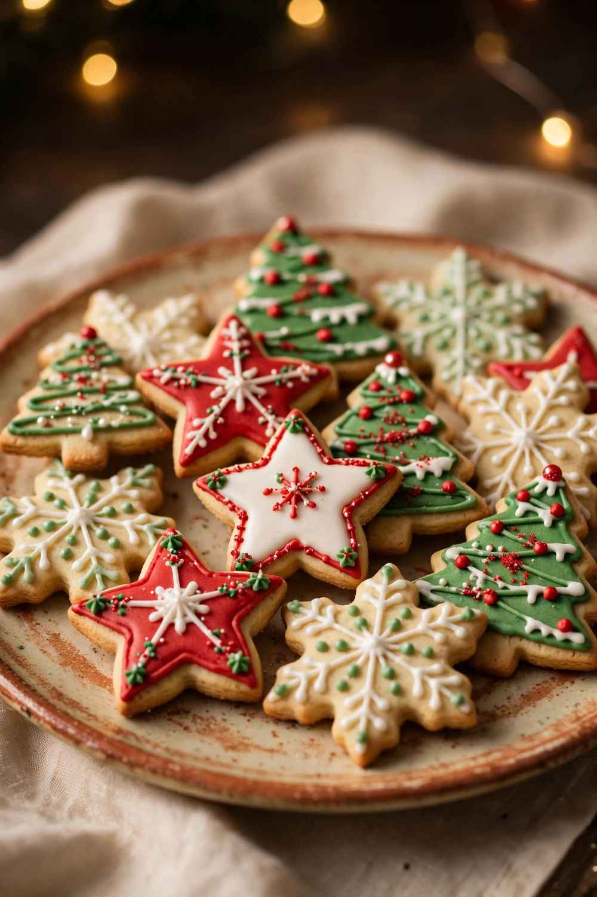
11. Old-Fashioned Oatmeal Raisin Cookies
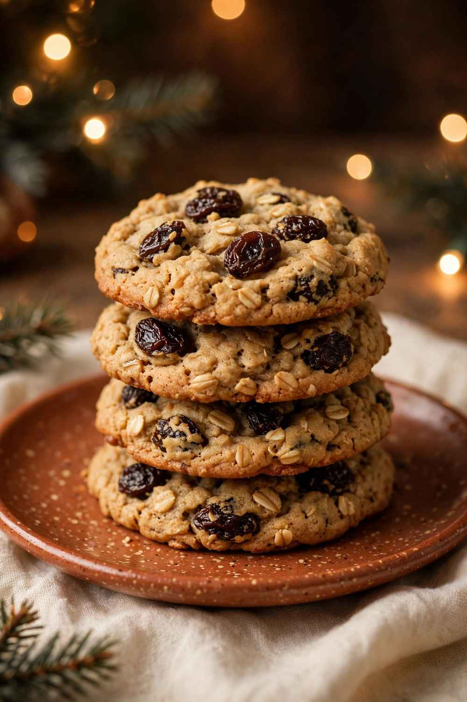
Chewy, spiced cookies full of raisins and oats.
Ingredients
- 1 cup butter
- 1 cup brown sugar
- 1/2 cup sugar
- 2 eggs
- 1 tsp vanilla
- 1 1/2 cups flour
- 1 tsp cinnamon
- 1 tsp baking soda
- 3 cups old-fashioned oats
- 1 cup raisins
Directions
- Cream butter and sugars; beat in eggs and vanilla.
- Stir in flour, cinnamon, baking soda, oats and raisins.
- Drop by spoonfuls and bake at 350°F for 12 minutes.
12. Gingersnaps
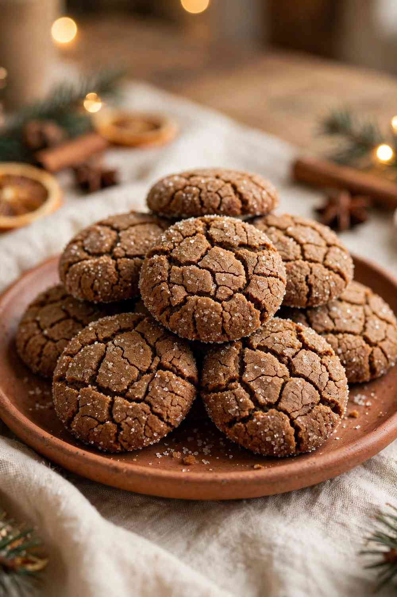
Thin, crisp cookies with a snappy ginger bite.
Ingredients
- 3/4 cup butter
- 1 cup sugar
- 1 egg
- 1/4 cup molasses
- 2 cups flour
- 2 tsp ground ginger
- 1 tsp cinnamon
- 1 tsp baking soda
- sugar for rolling
Directions
- Cream butter and sugar; beat in egg and molasses.
- Stir in flour, ginger, cinnamon and baking soda.
- Roll into balls, coat in sugar and bake at 350°F for 12 minutes.
Crinkles, toffee bars & frosted cutouts
Crackled tops, buttery bars and old-fashioned frosting — molasses crinkles, toffee bars, whipped shortbread and frosted cutouts.
13. Molasses Crinkles
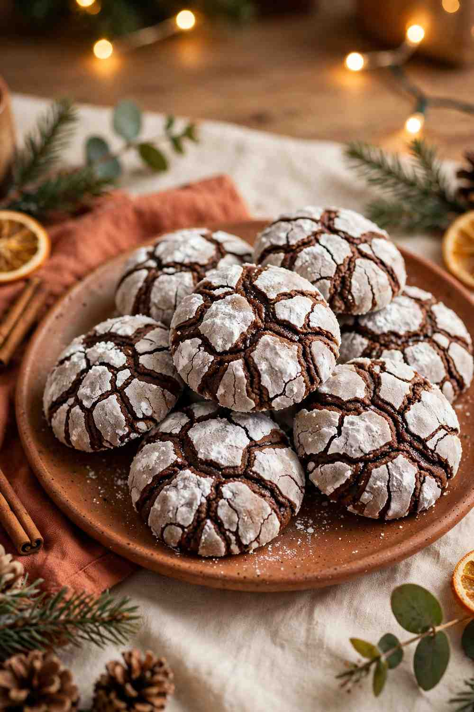
Crackled tops with soft, chewy centers.
Ingredients
- 3/4 cup butter
- 1 cup brown sugar
- 1 egg
- 1/4 cup molasses
- 2 1/4 cups flour
- 2 tsp baking soda
- 1 tsp cinnamon
- 1 tsp ginger
- sugar for rolling
Directions
- Cream butter and brown sugar; beat in egg and molasses.
- Stir in flour, baking soda and spices.
- Roll into balls, coat in sugar and bake at 375°F for 10 minutes.
14. Whipped Shortbread

Light-as-air piped shortbread with festive sprinkles.
Ingredients
- 1 cup butter
- 1/2 cup powdered sugar
- 1 1/2 cups flour
- 1/2 cup cornstarch
- 1 tsp vanilla
- red and green sprinkles
Directions
- Whip butter and powdered sugar until pale and fluffy.
- Beat in flour, cornstarch and vanilla.
- Pipe or drop small rosettes and top with sprinkles.
- Bake at 300°F for 18 minutes.
15. Butter Pecan Cookies
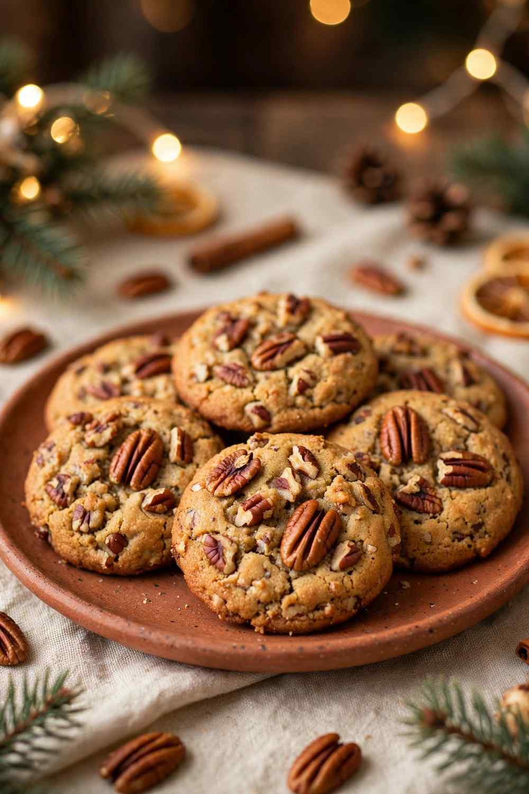
Toasty pecans folded into a buttery cookie.
Ingredients
- 1 cup butter
- 1 cup brown sugar
- 1 egg
- 1 tsp vanilla
- 2 cups flour
- 1 tsp baking soda
- 1 cup toasted chopped pecans
Directions
- Cream butter and brown sugar; beat in egg and vanilla.
- Stir in flour, baking soda and pecans.
- Drop by spoonfuls and bake at 350°F for 12 minutes.
16. English Toffee Bars
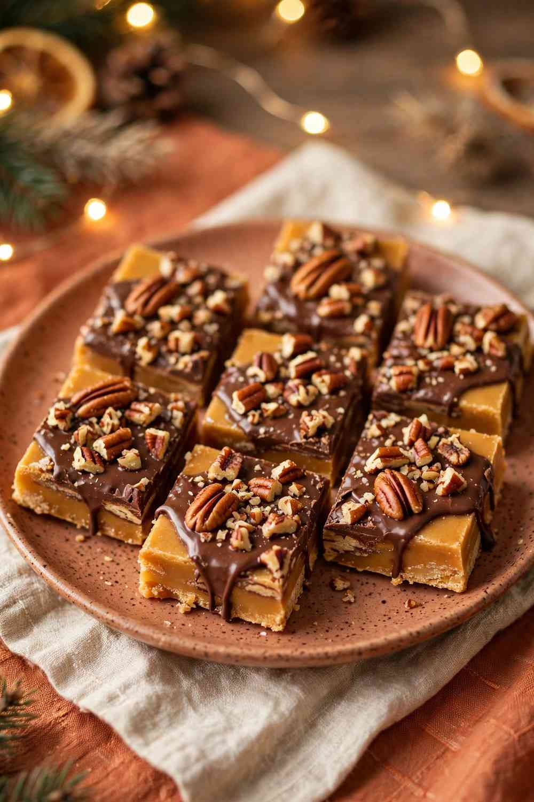
Buttery bars topped with chocolate and pecans.
Ingredients
- 1 cup butter
- 1 cup brown sugar
- 1 egg yolk
- 2 cups flour
- 1 tsp vanilla
- 1 cup chocolate chips
- 1/2 cup chopped pecans
Directions
- Cream butter and brown sugar; beat in egg yolk and vanilla.
- Stir in flour and press into a pan.
- Bake at 350°F for 20 minutes.
- Spread with melted chocolate and sprinkle with pecans.
17. Frosted Sour Cream Cutouts

Soft cutout cookies with old-fashioned tinted frosting.
Ingredients
- 1/2 cup butter
- 1 cup sugar
- 1 egg
- 1/2 cup sour cream
- 1 tsp vanilla
- 2 1/2 cups flour
- 1 tsp baking powder
- 1/2 tsp baking soda
- 2 cups powdered sugar
- 3 tbsp milk
- food coloring
Directions
- Cream butter and sugar; beat in egg, sour cream and vanilla.
- Stir in flour, baking powder and baking soda.
- Chill, roll out and cut shapes.
- Bake at 375°F for 8 minutes.
- Frost with tinted powdered-sugar icing.
18. German Springerle Cookies
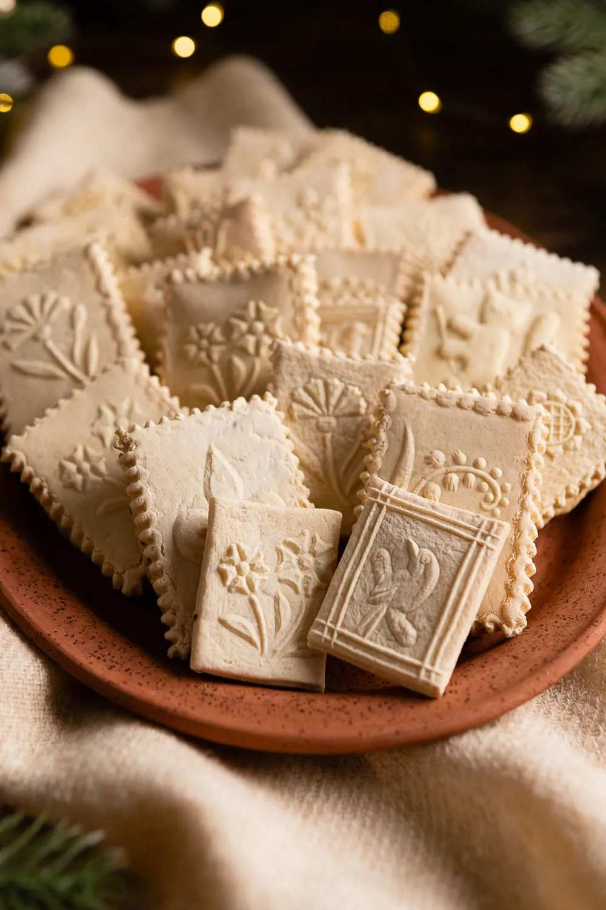
Anise-scented cookies with beautiful stamped designs.
Ingredients
- 4 eggs
- 2 cups sugar
- 1 tsp anise extract
- 4 cups flour
- 1 tsp baking powder
- 1/2 tsp salt
Directions
- Beat eggs and sugar until thick and pale, about 10 minutes.
- Stir in anise, flour, baking powder and salt.
- Roll out and press with a springerle mold.
- Let dry overnight, then bake at 325°F for 15 minutes.
Biscotti, rugelach & fruit cookies
Twice-baked, flaky and fruit-filled — anise biscotti, jam rugelach, cranberry biscotti and chewy coconut macaroons.
19. Italian Anise Biscotti

Twice-baked anise biscotti, made for dunking.
Ingredients
- 3 cups flour
- 1 cup sugar
- 3 eggs
- 1/2 cup butter, melted
- 2 tsp anise extract
- 1 tsp baking powder
- 1/2 cup sliced almonds
Directions
- Mix flour, sugar, eggs, butter, anise and baking powder into a dough.
- Shape into two logs and bake at 350°F for 25 minutes.
- Slice on the diagonal and bake again for 10 minutes per side.
20. Jam-Filled Rugelach

Flaky crescent cookies filled with jam and walnuts.
Ingredients
- 1 cup butter
- 8 oz cream cheese
- 2 cups flour
- 1/2 cup apricot jam
- 1/2 cup chopped walnuts
- 1/4 cup sugar
- 1 tsp cinnamon
Directions
- Beat butter and cream cheese, then stir in flour.
- Chill and roll into circles.
- Spread with jam, sprinkle with walnuts, sugar and cinnamon.
- Cut into wedges, roll up and bake at 350°F for 20 minutes.
21. Cranberry Orange Biscotti
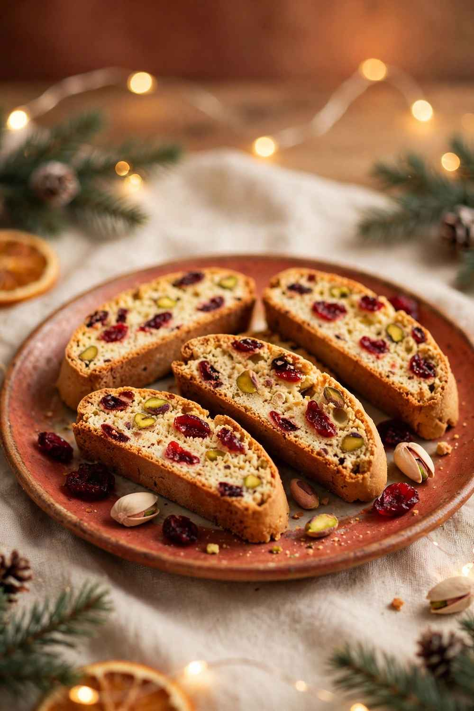
Tart cranberries and bright orange in a twice-baked cookie.
Ingredients
- 2 1/2 cups flour
- 1 cup sugar
- 2 eggs
- 1/2 cup dried cranberries
- zest of 1 orange
- 1 tsp baking powder
- 1/2 cup chopped pistachios
Directions
- Mix all ingredients into a stiff dough.
- Shape into logs and bake at 350°F for 25 minutes.
- Slice on the diagonal and bake again for 10 minutes per side.
22. Old-Fashioned Fork-Pressed Peanut Butter Cookies

Crisscross-topped cookies with classic peanut flavor.
Ingredients
- 1 cup butter
- 1 cup peanut butter
- 1 cup sugar
- 1 cup brown sugar
- 2 eggs
- 1 tsp vanilla
- 2 1/2 cups flour
- 1 tsp baking soda
Directions
- Cream butter, peanut butter and sugars.
- Beat in eggs and vanilla.
- Stir in flour and baking soda.
- Roll into balls, press with a fork and bake at 350°F for 10 minutes.
23. Fruitcake Cookies
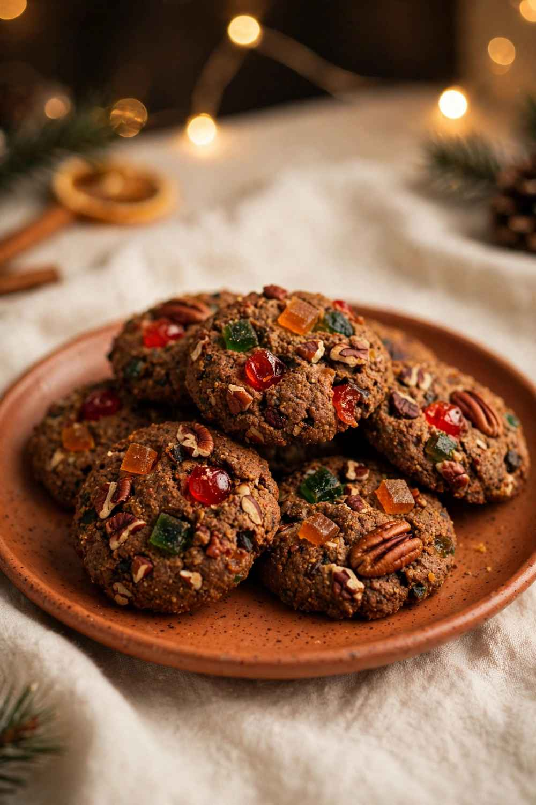
All the fruitcake flavor in cookie size.
Ingredients
- 1 cup butter
- 1 cup brown sugar
- 2 eggs
- 2 cups flour
- 1 tsp cinnamon
- 1/2 tsp nutmeg
- 1 tsp baking soda
- 2 cups mixed candied fruit
- 1 cup chopped pecans
Directions
- Cream butter and brown sugar; beat in eggs.
- Stir in flour, spices and baking soda.
- Fold in candied fruit and pecans.
- Drop by spoonfuls and bake at 325°F for 15 minutes.
24. Coconut Macaroons
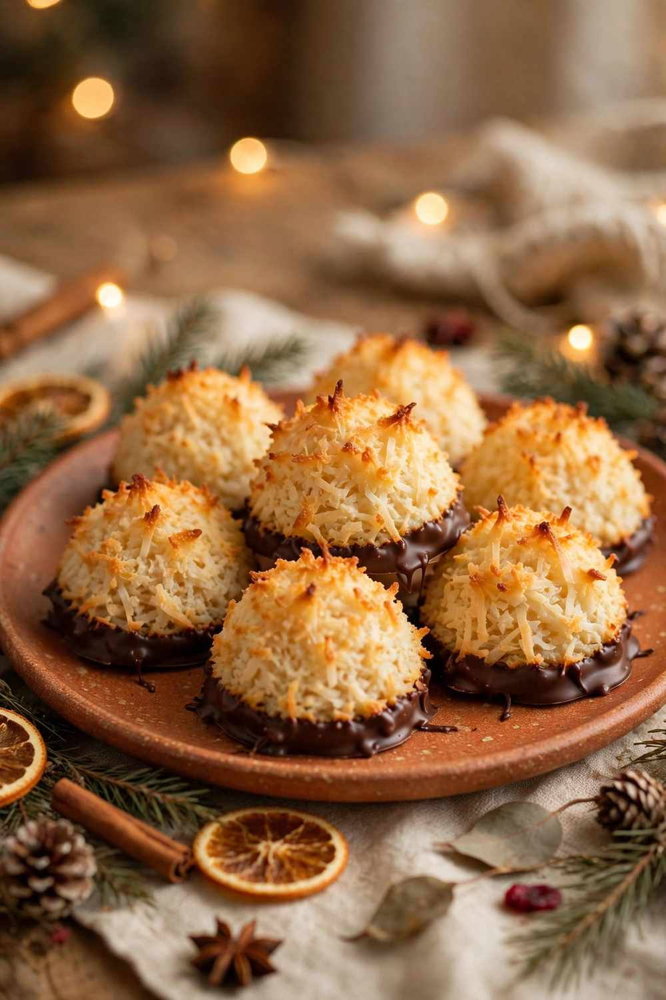
Chewy mounds of coconut with chocolate-dipped bottoms.
Ingredients
- 3 cups shredded coconut
- 2/3 cup sweetened condensed milk
- 2 egg whites
- 1 tsp vanilla
- 1/4 tsp salt
- 4 oz melted chocolate for dipping
Directions
- Stir coconut, condensed milk, vanilla and salt together.
- Whip egg whites and fold in.
- Drop mounds onto a lined sheet and bake at 325°F for 20 minutes.
- Dip bottoms in chocolate.
Maple, cocoa & holiday favorites
The last tin-fillers — maple walnuts, cocoa crescents, sand tarts, buttermilk cookies, cherry winks and spiced speculoos.
25. Maple Walnut Cookies
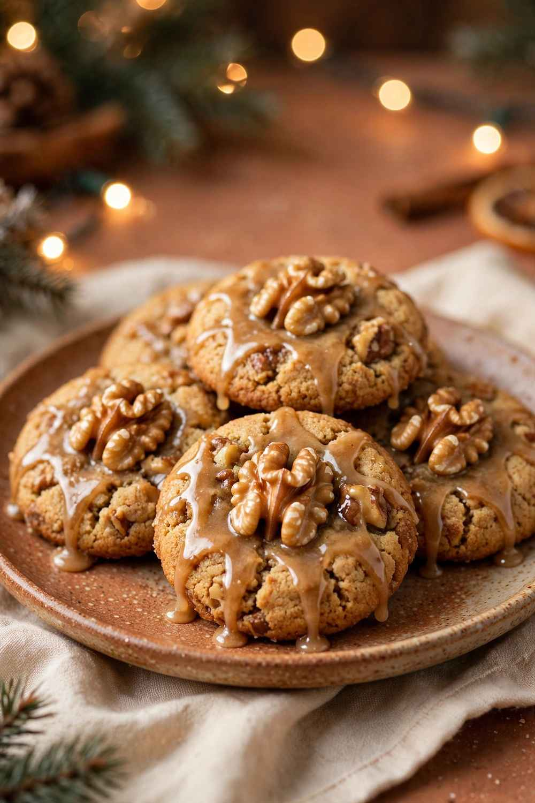
Soft cookies with a sweet maple glaze.
Ingredients
- 1 cup butter
- 1 cup brown sugar
- 1 egg
- 1/4 cup maple syrup
- 2 cups flour
- 1 tsp baking soda
- 1 cup chopped walnuts
- 1 cup powdered sugar
- 2 tbsp maple syrup for glaze
Directions
- Cream butter and brown sugar; beat in egg and maple syrup.
- Stir in flour, baking soda and walnuts.
- Bake at 350°F for 12 minutes.
- Drizzle with maple glaze.
26. Cocoa Almond Crescents

Chocolate crescent cookies with almonds.
Ingredients
- 1 cup butter
- 1/2 cup powdered sugar
- 1 3/4 cups flour
- 1/4 cup cocoa powder
- 1 cup ground almonds
- 1 tsp vanilla
- powdered sugar for rolling
Directions
- Cream butter and powdered sugar.
- Stir in flour, cocoa, almonds and vanilla.
- Shape into crescents and bake at 325°F for 15 minutes.
- Roll in powdered sugar.
27. Sand Tarts

Crisp, thin Pennsylvania Dutch cookies.
Ingredients
- 1 cup butter
- 2 cups sugar
- 2 eggs
- 3 cups flour
- 1 tsp baking powder
- 1 egg white
- cinnamon sugar
- sliced almonds
Directions
- Cream butter and sugar; beat in eggs.
- Stir in flour and baking powder.
- Chill, roll very thin and cut into rounds.
- Brush with egg white, sprinkle with cinnamon sugar and almonds.
- Bake at 350°F for 8 minutes.
28. Old-Fashioned Buttermilk Cookies
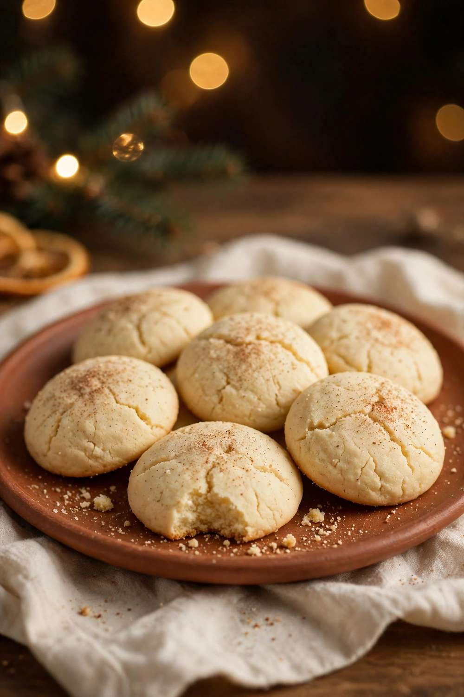
Soft, cake-like cookies, lightly spiced.
Ingredients
- 1 cup butter
- 1 1/2 cups sugar
- 2 eggs
- 1 cup buttermilk
- 1 tsp vanilla
- 3 1/2 cups flour
- 1 tsp baking soda
- 1/2 tsp nutmeg
Directions
- Cream butter and sugar; beat in eggs, buttermilk and vanilla.
- Stir in flour, baking soda and nutmeg.
- Drop by spoonfuls and bake at 375°F for 10 minutes.
29. Cherry Winks

Cornflake-coated cookies with a cherry on top.
Ingredients
- 1 cup butter
- 1 cup sugar
- 2 eggs
- 1 tsp vanilla
- 2 1/4 cups flour
- 1 tsp baking powder
- 1 cup chopped dates
- 1 cup chopped pecans
- 2 cups crushed cornflakes
- maraschino cherries
Directions
- Cream butter and sugar; beat in eggs and vanilla.
- Stir in flour, baking powder, dates and pecans.
- Roll into balls, coat in cornflakes and top with half a cherry.
- Bake at 375°F for 12 minutes.
30. Spiced Speculoos Cookies
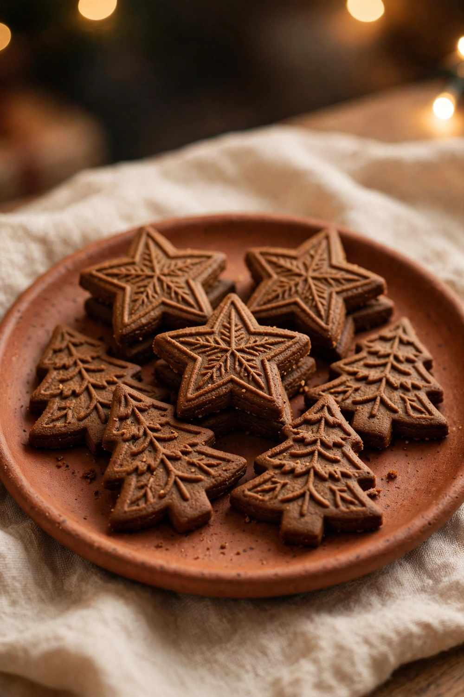
Crisp Belgian spice cookies in festive shapes.
Ingredients
- 1 cup butter
- 1 cup brown sugar
- 1 egg
- 2 1/2 cups flour
- 2 tsp cinnamon
- 1 tsp ginger
- 1/2 tsp nutmeg
- 1/2 tsp cloves
- 1 tsp baking soda
Directions
- Cream butter and brown sugar; beat in egg.
- Stir in flour, spices and baking soda.
- Chill, roll out and cut shapes.
- Bake at 350°F for 12 minutes.
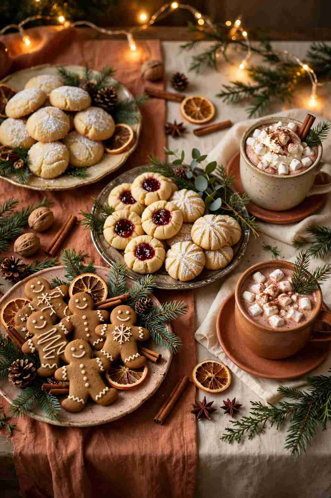
Baking & serving tips
Bake the chill-ahead doughs first — icebox logs, pinwheels, cutouts and springerle — then move on to drop cookies and bars while the oven is hot. Let cookies cool completely before frosting or packing, and store crisp and soft cookies in separate tins so textures stay true. Most of these cookies keep well: store them in airtight tins at room temperature for up to a week, or freeze undecorated cookies for up to a month and frost after thawing.
Related articles
More roundups from the same table:
- 30+ Christmas Cookie Recipes Everyone Will Love — classic, chocolate, spiced, filled and decorated cookies.
- 25+ Christmas Snowball Cookie Recipes — buttery snowball cookies in every flavor.
- 25+ No-Bake Christmas Desserts for a Crowd — truffles, cheesecakes, bars and treats.
- 25+ Christmas Breakfast Recipes for a Cozy Holiday Morning — casseroles, pancakes, cinnamon rolls and make-ahead bakes.
Keep exploring
- Browse the Desserts & Baking roundups — cookies, cakes, pies and sweet bakes.
- Browse all six categories — breakfast, lunch and dinner, desserts, air fryer, healthy recipes, and appetizers.
- More about the kitchen — what The Tasty Recipe Co is and how it works.
About The Tasty Recipe Co: Learn how we research, organize and review our food collections — see our About Us and Editorial Policy pages.
Recipe results can vary with ingredients, equipment, and technique. See our Disclaimer for food-safety and allergy notes.